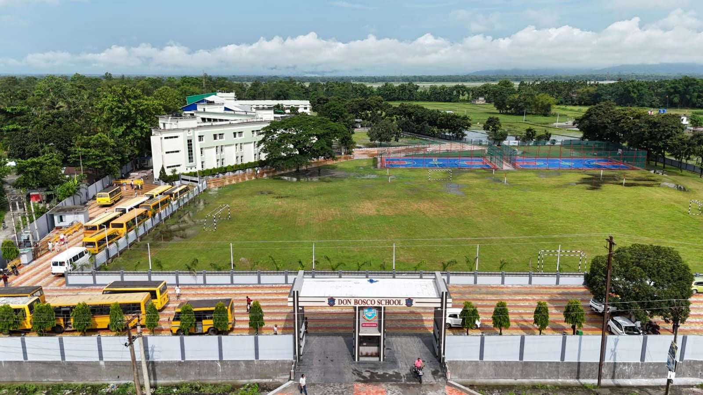

Admissions open, 2027–28
Forms close 10 December 2026. Entrance 17–18 December.

A Salesian school in the tea-garden heart of the Dooars, forming young people who are strong in body, sharp in mind, balanced in heart and rooted in values, from UKG to Class XII.

Don Bosco School Oodlabari is a Catholic minority, English-medium, co-educational school owned and administered by the Salesians of Don Bosco, North India. It is affiliated to the Council for the Indian School Certificate Examinations, New Delhi, and teaches classes from UKG to XII.
The school follows the Preventive System of St. John Bosco: education through reason, relationship and religion, where discipline grows out of understanding and trust rather than fear. Its stated vision is to shape every child into a physically strong, intellectually competent, emotionally balanced, socially committed, morally upright, environmentally sensitive and spiritually enlightened citizen.
Read about the school, its story and its leadership
“Our aim is to shape students who are not only academically proficient but also morally grounded and equipped to face the challenges of a rapidly changing world.”
Twenty clubs, four houses and six core values shape the week at Bosco — sport, art, music, service and quiet time for reflection, all inside the school day.
Tap a club to highlight it.
Tap a house to highlight it.
Don Bosco's way of educating rests on three pillars. Education here is not policed into children. It is drawn out of them, through presence, trust and joy.

Sport, art, music, clubs and celebrations fill the school year. These photographs are the school's own.


Proof that "beyond marks" never means settling for less. The Class of 2026 set the bar for every Bosconian who follows.

What is happening at the school, as published on the school homepage.
Forms close 10 December 2026. Entrance 17–18 December.
Announced on the school homepage for students of Classes VI to XII.
Announced on the school homepage for students of Classes III to V.
Announced on the school homepage: a class assembly by 6B.
Forms are available at the school office and online. The form fee is Rs 1,000, non-refundable. Forms close 10 December 2026.